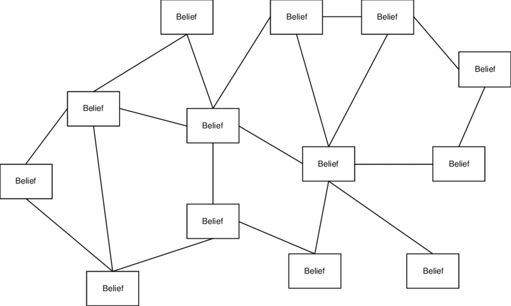

Why It’s So Difficult To Change People’s Minds
Table of Contents
- 1. Introduction
- 2. How Coherentism, Belief Systems, and Echo Chambers Work
- 3. Modeling Belief Networks As Hub-And-Spoke Diagrams
- 4. How Heuristics Affect Different People’s Ideologies
- 5. Censorship, Strawmen, And The Ideological Turing Test
- 6. Most People Never Bother To Think About Epistemology
- 7. Most People’s Identities Are Strongly Connected To Their Ideologies
- 8. What It Takes To Change People’s Minds
- 9. Text To Sort
Note: I haven’t finished writing this file yet.
1. Introduction
I am definitely not the first person to recognize how futile it usually is to argue with someone else who believes in a different ideology.
https://theuntangler.wordpress.com/2022/01/08/conversation-and-debate-is-mostly-useless/
2. How Coherentism, Belief Systems, and Echo Chambers Work
Every person has their own coherentist network of facts within their minds, which was formed from their social networks: online websites like Youtube, Twitter, Reddit, Facebook, the Internet in general, whatever influential books they’ve read, their friends, their own personal experiences, and whatever conclusions they make up on their own from all of that and their life experiences. Each person’s social network is usually an echo chamber or bubble, since most people prefer information that conforms with their own narratives, instead of what is true of reality.
The dominant, collective moral narrative of each online network selects for whatever information conforms best with the moral narrative of the users using the network. i
So everybody and every ideology has a different network of facts stored in their minds that they consider to be true. Nearly all these stored mental facts were cherry-picked to a great degree to fit their existing belief systems, rather than to challenge them. [The Texas Sharpshooter Fallacy]
[Defining belief systems] We have many other beliefs that we believe in that are all connected in similar networks, besides just ideological ones. The beliefs within the ideological belief system are a subset of one’s entire belief system, that is their entire mental model of reality from the perspective of them as a subject.
Aside from the fact that most people never seriously think about epistemology to any great extent, another reason why most people are so unaware of how all belief systems have coherentist structures is that most people don’t usually make many significant changes to their ideologies or belief systems within their lifetimes. People who have uprooted their entire ideological belief systems once or twice in their lives are somewhat common, but people who have done it even more than that are even rarer, and of those people, very few of them analyze the structures of their belief systems from an epistemic point of view. I, however, have changed my belief system many times as a young adult, as I have detailed in my political/philosophical journey. I went through many ideologies as I chased after understanding, and each time, I felt even more confident in my beliefs. i
In normies circles, people often parrot sentences and sound bites that supposedly highlight/expose contradictions in their opponents’ beliefs, whether they actually do that or not.
This is a type of low-level thinking. [link to post on parroting and repeating sentences as low-level thinking]
i
3. Modeling Belief Networks As Hub-And-Spoke Diagrams
Thus, when people criticize opposing ideologies, what will often happen is that they have one argument that they think is a silver bullet that they can utter that will automatically win the debate in their favor. Sometimes this actually does happen, and it’s easier to happen the more ridiculous the opposing person’s claim is. When the supposed silver bullet doesn’t convince the other person that they’re wrong (and there is no censorship to shut the debate down), what usually ensues is a lengthy debate where the opposing ideologist recites other beliefs connected to the belief node that is under attack. This makes it very challenging to refute even a single belief, because the debaters aren’t just attacking a single belief, they’re also attacking the entire network of beliefs that all back up and support that one belief node.

This is why when people convert to new ideologies, it can be gradual process when they’re slowly discarding beliefs from their former worldview (they’re removing the spokes within their belief network), or a really rapid process where so many beliefs are discarded all at once when a particular belief gets disproven (one of the central hubs of the belief network). Perhaps even a new ideology is introduced, although this part will probably be a more lengthy process since it usually takes time to adapt and get used to a new ideology.
Ultimately, the key to rejecting an ideology is to keep letting the contradictions pile up until the entire belief system is rejected.
4. How Heuristics Affect Different People’s Ideologies
4.1. People Look For Patterns That Cohere With Their Beliefs, Rather Than Contradicting Them
Since most people are unaware that belief systems are structured to coherentism, every time they see or hear something that they perceive to reaffirm their belief system, they only interpret what they have seen as more evidence for believing that they are right. They aren’t aware that Ideologies cause people to look for patterns that conform with their beliefs, instead of patterns that contradict their beliefs. Every person has an ideological filter that causes them to interpret events according to their ideology, instead of what the events are actual signs of.
Example: The 2022 Buffalo Shooting
- Conservatives pointed out how: 1. the shooter’s manifesto stated that he was always authoritarian left-leaning, 2. that he did the attack to provoke lawmakers to past more gun control laws that would supposedly encourage white people to fight for their rights, 3. they interpreted his race realism facts and study citations as racist garbage (mainly because most people never got to see the manifesto since it was censored), etc.
- Leftists used the manifesto as evidence that white supremacy is a serious issue, despite how remarkably rare incidents like these are, many leftists lied by saying that the shooter was a conservative (even though the manifesto says that he was left-leaning), etc.
[Selective Pattern Searching] i
Ideologies cause people to look for patterns that conform with their beliefs, instead of patterns that contradict their beliefs. Every person has an ideological filter that causes them to interpret events according to their ideology, instead of what the events are actual signs of.
i
4.2. Why Ideologues Come Up With Ridiculous Ideas
Since coherence is necessary in order to form strong belief systems, this causes ideologues to make up bad ideas that aren’t grounded in reality in order to increase the coherence of what they believe and prevent them from recognizing how their ideologies contradict reality. In order for memes and ideologies to reproduce themselves, they need to have strong links that reinforce the other ideas inside the believers’ belief systems, and crazy, ridiculous ideas can do just that. Some examples:
- How many Democrats believe that Republicans want Voter ID laws because they want to prevent minorities from voting, even though the real reason is that Republicans are concerned with voter fraud.
- How leftists will insist that conservatives are anti-immigration only because they are racist, when they’re actually concerned with crimes committed by illegal immigrants, and they believe that the country’s resources and welfare should be preserved only for the country’s citizens.
- How many far-leftists believe that right-wingers want people to have more children only to “create more wage slaves and feed Capitalism’s need for endless growth”.
- Many hard-core Communists claim that all the information about North Korea being a dictatorship instead of a democracy was fabricated by western and mainstream media outlets. Example. This belief is effective for reinforcing the belief in Communism because it gives the believers a reason to easily discredit the vast majority of information out there.
- How Libertarians came up with Cornucopianism to compensate with their belief that population control and other governmental measures are not necessary to regulate the population, even though it makes no historical or biology sense and greatly overestimates the potential of technology.
- How this Ancap came up with the conspiracy theory that the world’s governments want to depopulate the Earth as an explanation for why bad events are happening (from his POV).
- How people instinctively reject race realism because they don’t know any better and due to how memetics tends to work.
- Being taught all sorts of great things about individualism and independence is a factor that leads people (particularly Libertarians) to naïvely reject race realism because in theory everybody should be equal in an ideal individualist world.
- How leftists think that that conservatives want to ban abortion because they “want to control women’s bodies”, even though the real reason is that conservatives believe that unborn infants as having a right to life.
- Creationists who insist that dinosaur bones were constructed and planted in the ground to provide evidence for evolution.
- These Efilists who assume that Blithering Genius was a religious person and “pretends everyone else doesn’t have feelings” since it’s easier for them to believe that, since actually confronting his arguments against Efilism would weaken the coherence of their belief systems.
- Thomas Aquinas came up with his Five Arguments in Favor of God because it was a way to increase the coherence of the Christian belief system, which is why the arguments gained a lot of popularity. In my opinion, the only argument that made any sense was the Cosmological Argument, which I explain here.
- i
- i
Interestingly, many of the craziest, most delusional lies tend to be brainstormed when political ideologues and utopian ideologists are trying to brainstorm propositions that they believe to be true (even if there’s little to no evidence regarding the actual truth) in order to maintain the coherency of whatever crazy, ridiculous nonsense that they believe.
4.2.1. List Of Crackpots Who Have A Sizable Following, And Claim That They’ve Somehow Found The Real Answer To A Scientific Theory That Is Widely Accepted, Even If They Really Hadn’t
- Christopher Langan: Claims to have used mathematics to prove the existence of God, when he only changed the definition of God. He also argues that the CTMU solves the physical understanding of the universe, and purposefully uses complex terminology to confuse people and create the illusion that he’s smarter than he really is.
- Gary Mosher: Claims that his bitforce theory of physics debunks the modern Maxwell and Einstein based understanding of physics, even though he doesn’t even understand basic calculus and derivatives. He is also the creator of Efilism, and uses all sorts of odd rhetoric and fake response videos (where he never even watched the responding video) before “debunking” them.
- Larken Rose: Claims that humanity lives in the Matrix regarding government authority, but he doesn’t understand how morality actually works, nor does he understand game theory and how reality dooms anarchism to fail.
- Cory Matthew: Claims that modern mathematics makes lots of unnecessary assumptions to prove (seemingly) obvious things, and believes that socialism / mutualism is the answer to fixing the economy, even though he doesn’t understand Georgist Economic Theory.
- Alex Jones: Makes lots of fake, crazy conspiracy theoretic claims, but has a really loyal following.
- i
5. Censorship, Strawmen, And The Ideological Turing Test
The censorship of ideas is another important factor at play for making it more difficult to change people’s minds. As long as alternative beliefs are never mentioned and those things are kept out of consciousness, people are never going to even think about heretic ideas. Inside many of these networks, they will hear the worst strawmen constructions of the other side, so they will typically respond with fallacious rebuttals to heretic ideas if they do hear them.
There are many people who wouldn’t know how to refute arguments against their belief system if they stepped outside of their ideological bubbles and encountered criticisms from other people who disagree with them. And for other topics/ideologies, they will only be familiar with the strawman version of those opposing belief systems. This is why most ideologists fail the Ideologial Turing Test, a test analogous to a kind of Turing test: instead of judging whether a chatbot had accurately imitated a person, the test would judge whether a person had accurately stated the views of ideological opponents to the opponents’ satisfaction.
6. Most People Never Bother To Think About Epistemology
i
Most people don’t understand fallacies like: False Equivocations, Post Hoc Ergo Propter Hoc, Appeal to Authority, Correlation & Causation, etc. As a result, people form many beliefs that they would otherwise not believe in if they were more knowledgeable about what counts as a valid argument or not.
The Why Before How Problem & Theological Non-Cognitivism
Since knowledge is formed as models of subjective experience of reality, truth and knowledge are both relative. A lot of the disagreements that happen between people can be attributed to how people have more informative models of reality than other people.
6.1. Philosophical Progress Has Historically Been Very Slow
It is also the case that many People Don’t Have The Time To Deeply Read/Research The Necessary Knowledge For Creating A Sound Philosophy.
Why Progress In Philosophical Knowledge Has Been So Historically Slow
6.2. People Even Disagree On What Counts As An Argument Or A Fallacy
When I was an Ancap, I mistakenly thought that many people’s support for Democracy was an Appeal to the People Fallacy for their beliefs, and when I was Efilist-leaning, I thought that most people were using Appeal to Nature Fallacies to justify their beliefs, but as it turns out, neither of these are fallacies for different reasons.
i
Many Ancaps mistakenly believe that it’s a Fallacy to Appeal to the People when justifying current political systems. The problem with this is that Appeal to the People might be a valid fallacy for epistemological or scientific reasoning, but Appeal to the People is NOT a legitimate Fallacy when reasoning about ethical or political philosophy. Epistemology and Science are based on sensory knowledge, whereas Ethics and Politics are based on value knowledge. If anything, it’s a Fallacy to apply sensory knowledge outside of its scope of appropriate use. Realizing this greater philosophical understanding for myself was one of the reasons why I stopped being an Ancap a few years ago.
Many vegans and Efilists accuse their opponents of Appealing to Nature, but Appealing to Nature is actually not a valid fallacy if resisting Nature is futile and self-defeating, it’s just reality.
Many theists favor the Transcendental Argument for God (TAG), and they think it’s a fallacy to not believe in God, lest people don’t have a foundation for objective truth, objective morals, etc.
i
i
7. Most People’s Identities Are Strongly Connected To Their Ideologies
8. What It Takes To Change People’s Minds
i
Street Epistemology is _.
Street Epistemology tends to be more effective at changing people’s minds because it’s a great way to get people to question the implicit assumptions of their belief systems, that they normally take for granted.
Brittonic Memetics: A Guide to Fixing Receptive Leftists
The purpose of debates is typically not to convince the other debater, but rather to convince the audience listening to the debate, if there is one.
8.1. What is the Best Belief System?
And this raises the question what is the best networking facts for anybody to believe in, especially given that there is a limited knowledge of the world that every person can attain within their lifetime?
One of the problems is that people’s opinions about what the best facts are is tainted by their moral narratives that preach what people are to know about reality instead of how reality is (most people’s ideologies disobey the Is-Ought Distinction or Hume’s Guillotine when they many of their underlying assumptions are examined more closely in detail).
Some objective facts that most people can agree on are the hard (universal) sciences. However, those sciences are not particularly relevant for figuring out how to structure of a human society. There is also a lot of debate in the human-centric sciences, due to people’s partisanship and ideologies in academia. Unfortunately, this is even true for world-centric sciences like biology.
9. Text To Sort
For faster results it is probably more efficient to attack the hubs of an ideological belief system rather than the spokes. But unfortunately, this is always the easiest route to do because the hubs that have the mass connection. We can think of the relative worth of dismantling other people’s beliefs in terms of a cost benefit analysis. If you manage to dismantle one of the beliefs that are relatively more well-connected than other ideas, then there is a greater reward for doing so, but the same time it can also be more difficult, because the greater number of connections that that central belief belief can also make it very difficult to let go of. Conversely, attacking beliefs, or the more minor ones could be easier since they have your connections to the other beliefs, but there is also a small payoff for disproving them due to their fewer connections.
So generally speaking, there is never a right way to dismantle someone else’s belief system. One can start the spoke beliefs, or one can start the hub beliefs. They both have payoffs that tend to correlate proportionally to the number of collections that they have, so the best beliefs to refute are the ones that you think you will have the best shot at.
When people ask questions about things that they are unsure of relating to their ideologies to other believers of the ideology, it is typically because they are seeking coherence for the ideology regarding one of the weaker nodes of their belief network. these moments are often great times to strike at the ideology and expose contradictions within the belief system, if there are any. The rejection or further propagation of the ideology depends on its ability to generate coherent, sounding explanations for times like these where coherent is lacking.
i